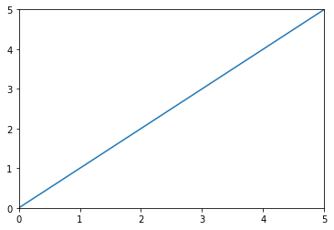

To briefly summarize the idea of my final webiste project, it is going to be a professional portfolio that can allow me demonstrate some of the research project that I have been working with as well as popular topics that are related to my professional field.
This topic page will contain most of my personal information regarding my professional domain as a researcher as well as my interests in different other technological fields.
It serves as an introduction to give user an idea of who am I and what I do.
The content in this page will be very similar to a CV but more interactive. Mostly it will consist text descriptions and links which usually are
Example
Y. Gao, M. Dietrich, M. Pfeiffer and G. N. and DeSouza, "Classification of sEMG Signals for the Detection of Vocal Fatigue based on VFI Scores," 2018 40th Annual International Conference of the IEEE Engineering in Medicine and Biology Society (EMBC) Link
This page is where I post articles about the projects that I have done in the past.
It will be used as examples to demonstrate the level of my skills. Also, for those who might be working on similar projects, hopefully my experiences could provide them support in solving their problems.
The content of this page will focus on describing as best as it can be for each project to provide a general view of the main idea. It will include
Furthermore, different project will have different highlight depending the main methods that are being used.
The following example is one of the simulation that I would like to demonstrate
Mini lectures to explain some of the topics/methods/subjects in this field.
As a user, sometimes I struggle to find good support materials on certain topics. Thus, this is where I want to provide some sort of informations on those topics in my field to help other users.
The content will consistent of texts, equations, and graphics. Here is a example that uses a graph to illustrate an equation.
